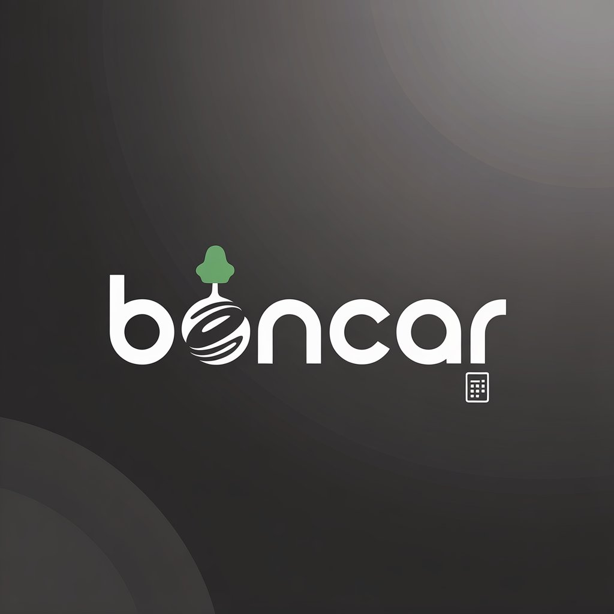
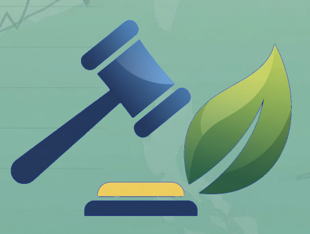

HALO, SAYA
Mahasiswa Informatika USK yang fokus pada Data Science dan solusi berbasis data.
Mahasiswa Informatika di Universitas Syiah Kuala. Saat ini fokus mendalami pengolahan data, statistik, dan machine learning untuk memecahkan masalah nyata.


Aplikasi sistem debat kebijakan sekolah
Dalam Pengembangan